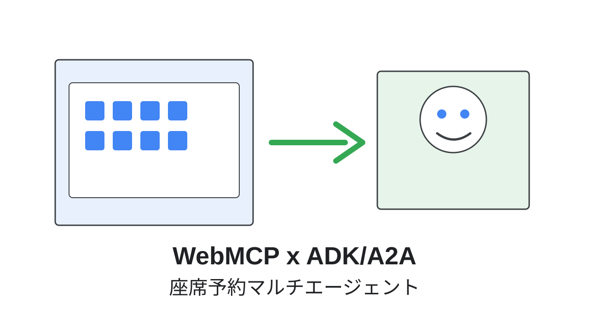
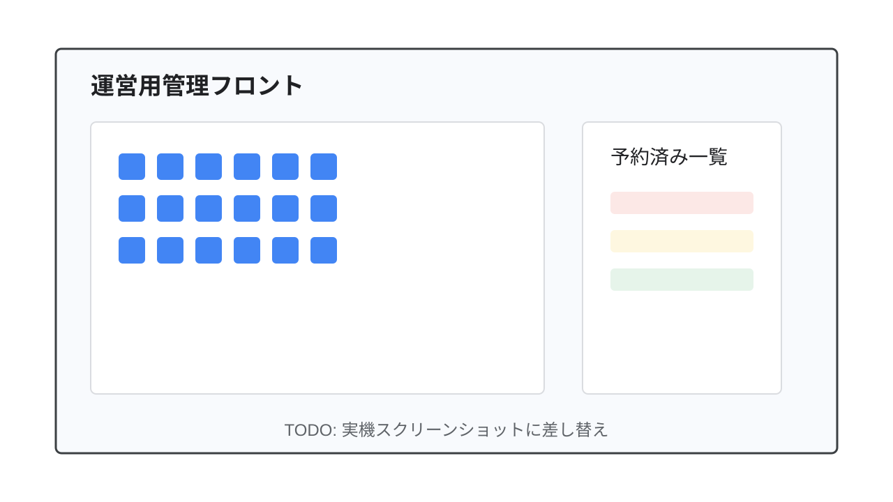
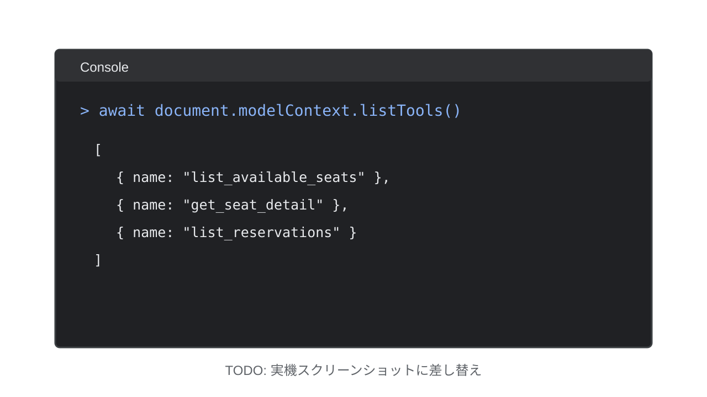
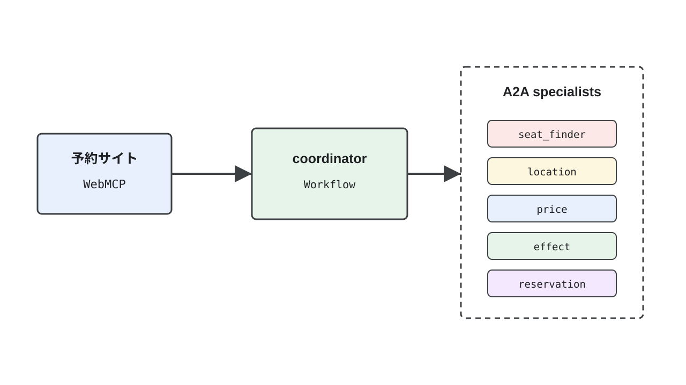
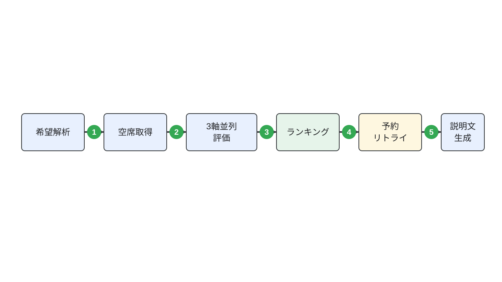
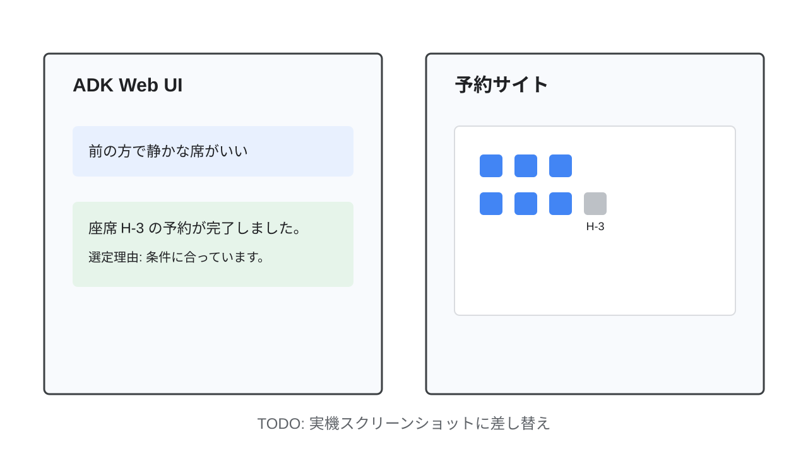

部長「ねえ、新人くん。今度私たちが開催するイベントの予約サイトあるじゃん？」
新人くん「ありますね」
部長「どうやら WebMCP っていう、AI Agent から Web ページを操れる実験的な仕組みがあるらしいんだよ。form に属性をつけるだけで実装できる宣言型と、スキーマを定義してツールを登録する命令型の2種類があるんだって。新人くん、私たちの予約サイトに、その両方を実装してくれないかな？」
このコードラボでは、すでに座席一覧・予約フォームが完成しているイベント座席予約サイトに WebMCP の宣言型APIと命令型APIを実装します。そのうえで、Google ADK と A2A（Agent2Agent）プロトコルを使い、そのWebMCPを実際に操作してユーザーの代わりに座席を予約するマルチエージェントを作ります。
60席の座席を持つイベント予約サイトと、その座席を「場所」「値段」「効果（タグ）」の3つの観点から評価して最適な1席を実際に予約する、Google ADK × A2A のマルチエージェントを作ります。エージェントは今回実装するWebMCPだけを使って座席情報を取得し、予約を行います。
document.modelContext.registerTool()）を実装する方法<form>への属性付与）を実装する方法Workflowでコード駆動のマルチエージェントを構築する方法webmcp-agent-booking/_repos/template）booking-api/）と運営用管理フロント（admin/）の実装（これらは運営側が用意した完成済みインフラとして使います）このステップでは、ハンズオン用のワークスペース（webmcp-agent-booking/_repos/template）で依存関係をインストールし、既に完成している運営インフラ（予約API・管理フロント）と予約サイトの基本機能を起動します。
ワークスペースのルートで、Python側とJavaScript側の依存関係をまとめてインストールします。
cp .env.example .env
cp booking-api/.env.example booking-api/.env
make setup
.envのGOOGLE_API_KEYに、Google AI Studioで取得したGemini APIキーを設定してください。
座席予約API（Hono）と、座席をリセットできる管理フロント（React）は、このハンズオンの対象外として最初から完成しています。それぞれ起動して動作を確認します。
make run-booking-api
期待される出力:
運営用予約API: http://localhost:3001
別のターミナルで管理フロントも起動します。
make run-admin
http://localhost:5174を開き、パスワードgdg-io-osaka-2026でログインできることを確認してください。60席のうち3席が予約済みの状態で表示されます。

さらに別のターミナルで、参加者が実装していく予約サイトを起動します。
make run-web
http://localhost:4000を開いてください。WebMCPはまだ実装していませんが、座席の一覧表示・クリックによる座席選択・人間による予約操作は、すでにすべて完成した状態で動作します。実際に1席、手動で予約してみてください。
期待される出力: 選択した座席がグレーに変わり、「予約済み一覧」に反映される。
座席の取得・表示・予約というサイトの基本機能は、このステップの時点で既に完成しています。
このステップでは、AIエージェントがJavaScriptの関数のように呼び出せる「命令型」のWebMCPツールを、予約サイトに実装します。
web/public/index.htmlには、すでに次の2つのscriptタグが読み込まれています。
<script src="https://unpkg.com/@mcp-b/global@latest/dist/index.iife.js"></script>
<script src="https://cdn.jsdelivr.net/npm/@mcp-b/webmcp-local-relay@latest/dist/browser/embed.js"></script>
1本目の@mcp-b/globalは、WebMCPの命令型API（document.modelContext）をブラウザに実装するポリフィルです。ネイティブ実装のないブラウザでも、これを読み込むだけでdocument.modelContext.registerTool()が使えるようになります。2本目の@mcp-b/webmcp-local-relayは、ページに登録されたツールをws://127.0.0.1:9333経由でローカルのADKエージェントに公開するブリッジです。
どちらも本物のWebMCP実装で、shim（模倣品）ではありません。Chromeのフラグ有効化や拡張機能のインストールは不要です。
web/public/app.jsのregisterImperativeWebMcpTools()関数に、3つの命令型ツールを実装します。
web/public/app.js
if (!ctx) {
console.warn("WebMCP: document.modelContext が見つかりません。@mcp-b/global の読み込みを確認してください。");
return;
}
- // TODO: 命令型WebMCP API を実装する。
- // ctx.registerTool({ name, description, inputSchema, execute }) を使って、
- // 次の3つのツールを登録する:
- // - list_available_seats({ tag? }) : 空席一覧を返す（fetchSeats を使う）
- // - get_seat_detail({ seatId }) : 1座席の詳細を返す
- // - list_reservations() : 予約済み一覧を返す（fetchReservations を使う）
+ ctx.registerTool({
+ name: "list_available_seats",
+ description: "現在空いている座席の一覧を取得する。tagで絞り込み可能（例: quiet, view, power）。",
+ inputSchema: {
+ type: "object",
+ properties: {
+ tag: { type: "string", description: "絞り込みたいタグ（省略可）" },
+ },
+ },
+ async execute({ tag } = {}) {
+ const seats = await fetchSeats();
+ const available = seats.filter(
+ (seat) => seat.status === "available" && (!tag || seat.tags.includes(tag)),
+ );
+ return { content: [{ type: "text", text: JSON.stringify(available) }] };
+ },
+ });
+
+ ctx.registerTool({
+ name: "get_seat_detail",
+ description: "座席IDを指定して、その座席の詳細情報（場所・値段・タグ・予約状況）を取得する。",
+ inputSchema: {
+ type: "object",
+ properties: {
+ seatId: { type: "string", description: "座席ID（例: C-3）" },
+ },
+ required: ["seatId"],
+ },
+ async execute({ seatId }) {
+ const seats = await fetchSeats();
+ const seat = seats.find((s) => s.id === seatId);
+ if (!seat) {
+ return { content: [{ type: "text", text: `座席 ${seatId} は存在しません。` }], isError: true };
+ }
+ return { content: [{ type: "text", text: JSON.stringify(seat) }] };
+ },
+ });
+
+ ctx.registerTool({
+ name: "list_reservations",
+ description: "現在の予約済み一覧を取得する。予約が実際に成立したかどうかの確認に使う。",
+ inputSchema: { type: "object", properties: {} },
+ async execute() {
+ const reservations = await fetchReservations();
+ return { content: [{ type: "text", text: JSON.stringify(reservations) }] };
+ },
+ });
+
+ console.log("WebMCP: 命令型ツールを登録しました (list_available_seats, get_seat_detail, list_reservations)");
}
execute関数の中では、既に用意されているfetchSeats()/fetchReservations()をそのまま呼び出しています。WebMCPツールは、既存のサイトのロジックを「AIエージェントから呼べる形にラップする」だけで実装できます。
inputSchemaはJSON Schemaで、エージェント（LLM）がこのツールにどんな引数を渡せるかを伝えるためのものです。
保存後、http://localhost:4000をリロードし、開発者ツールのConsoleで次を実行します。
await document.modelContext.listTools()
期待される出力: list_available_seats、get_seat_detail、list_reservationsの3件を含む配列。

このステップでは、予約フォームに属性を追加するだけでエージェントから呼び出せるようにする「宣言型」のWebMCP APIを実装します。
宣言型APIでは、JavaScriptでロジックを書く代わりに、<form>と<input>に決められた属性を付与します。ブラウザがフォームの構造からJSON Schemaを自動生成し、そのフォーム自体を1つの「ツール」としてエージェントに公開します。
属性 | 付与先 | 役割 |
|
| ツール名 |
|
| ツールの説明（エージェントが呼ぶかどうかの判断に使う） |
|
| エージェントがフォームを自動送信することを許可する |
| 各 | そのパラメータの説明 |
web/public/index.htmlの予約フォームに、宣言型WebMCPの属性を追加します。
web/public/index.html
<!--
- TODO: WebMCP 宣言型API を実装する。
+ WebMCP 宣言型API:
toolname / tooldescription / toolautosubmit を <form> に付与し、
- 各 <input> には toolparamdescription を付与すると、
+ 各 <input> には name + toolparamdescription を付与するだけで、
このフォーム自体がエージェントから呼び出し可能な「予約ツール」になる。
-->
- <form id="reservationForm">
- <input type="hidden" id="seatIdInput" name="seatId" required />
+ <form
+ id="reservationForm"
+ toolname="reserve_seat"
+ tooldescription="指定した座席IDで1席予約する。同じ座席が既に予約済みの場合は失敗する。"
+ toolautosubmit
+ >
+ <input type="hidden" id="seatIdInput" name="seatId" toolparamdescription="予約する座席のID（例: C-3）" required />
<label for="displayNameInput">お名前</label>
<input
type="text"
id="displayNameInput"
name="displayName"
+ toolparamdescription="予約者として表示する名前"
placeholder="山田太郎"
required
/>
<label for="noteInput">メモ（任意）</label>
<input
type="text"
id="noteInput"
name="note"
+ toolparamdescription="予約に関する任意のメモ"
placeholder="車椅子利用など"
/>
<button type="submit" id="submitButton" disabled>この座席を予約する</button>
</form>
保存後リロードし、開発者ツールのElementsパネルで<form id="reservationForm">に4つの属性が付いていることを確認してください。人間が手動でボタンを押す通常の予約操作は、属性を追加した後もまったく変わらずに動作します。
web/public/app.jsのreservationFormのsubmitイベントリスナーには、event.agentInvokedが真のときにevent.respondWith()で結果をエージェントへ返す処理も既に実装済みです。
新人くん「はあ、はあ...部長、WebMCP実装できました」
部長「お、すぐできたね。実際にそのWebMCPが使えるか、テストしたいんだよね。ユーザーの要望を聞きつつ、一番適切な席を予約するAgentを作ってくれないかな？ Googleが作ったというADKとA2Aを使って、それなりにマルチエージェント構成にしてくれると嬉しいな。もちろん実装したWebMCPは両方使ってね」
ここから第二章です。「場所」「値段」「効果」という3つの観点からユーザーの要望を推測し、実装したWebMCPを使って実際に座席を予約するエージェントを、Google ADKとA2Aで作ります。

coordinatorはADKのWorkflowとして実装し、5つのspecialist（seat_finder/location/price/effect/reservation）はそれぞれ独立したA2Aサービスとして別ポートで起動します。coordinatorはA2Aプロトコル（RemoteA2aAgent）を使ってこれらのspecialistを呼び出します。
このハンズオンのAgent実装には、一貫した設計方針があります。「どの席が一番良いか」「予約が成功したか」「何回までリトライするか」といった判断は、すべてPythonの決定的なコードが行います。LLMにはスコアの提案や、結果を自然文で説明する役割だけを持たせます。
具体的には、次の3種類の判断がPython側の関数に切り出されています。
判断 | 実装する場所 |
3軸のスコアを集計してランキングする |
|
予約が本当に成立したかを確認する / 成否メッセージを作る |
|
ユーザー要望の語彙をあらかじめ決めた候補にクランプする |
|
この方針を守ることで、「LLMがうっかり間違った席を成功と判定してしまう」「毎回リトライ回数がブレる」といった事故を防ぎます。

agents/coordinator/agent.pyでは、この処理順序を1つのWorkflow(edges=[...])として明示的にコードで表現します。これから実装するファイルは、すべてこの図のどこかに対応しています。
このステップでは、前のステップで説明した「Pythonが判断する」部分、つまりagents/shared/配下の3つのヘルパー関数を実装します。
agents/shared/preference.py
def normalize_preference(value: SeatPreference | dict | str) -> SeatPreference:
- # TODO: value が SeatPreference / dict / str のいずれで来ても SeatPreference に揃える。
- # そのうえで、preferred_section は SECTIONS に、preferred_position は POSITIONS に、
- # desired_effects は EFFECT_TAGS に含まれるものだけへクランプ（重複除去）し、
- # max_price が 0 以下なら None にして返す。
- raise NotImplementedError
+ if isinstance(value, SeatPreference):
+ preference = value
+ elif isinstance(value, dict):
+ preference = SeatPreference.model_validate(value)
+ else:
+ preference = SeatPreference(free_text=str(value))
+
+ section = preference.preferred_section if preference.preferred_section in SECTIONS else None
+ position = preference.preferred_position if preference.preferred_position in POSITIONS else None
+ effects = [tag for tag in dict.fromkeys(preference.desired_effects) if tag in EFFECT_TAGS]
+
+ max_price = preference.max_price
+ if max_price is not None and max_price <= 0:
+ max_price = None
+
+ return preference.model_copy(
+ update={
+ "preferred_section": section,
+ "preferred_position": position,
+ "desired_effects": effects,
+ "max_price": max_price,
+ }
+ )
この関数はLLMの出力（SeatPreference）を受け取りますが、判断は一切LLMに戻しません。
agents/shared/scoring.py
def score_and_rank(
candidates: list[SeatCandidate],
reports: list[EvaluationReport],
) -> list[RankedSeat]:
- # TODO: reports (location/price/effect の3 EvaluationReport) から seat_id ごとの
- # 軸別スコアを集め、available な candidate ごとに3軸の平均を total_score として
- # RankedSeat を作る。スコアが無い軸は DEFAULT_SCORE で埋め、reasons はスコアに
- # 付いていた reason 文字列を集めたもの。最後に total_score の降順でソートして返す。
- raise NotImplementedError
+ scores_by_axis: dict[str, dict[str, tuple[int, str]]] = {axis: {} for axis in AXES}
+ for report in reports:
+ if report.axis not in scores_by_axis:
+ continue
+ for axis_score in report.scores:
+ scores_by_axis[report.axis][axis_score.seat_id] = (axis_score.score, axis_score.reason)
+
+ ranked: list[RankedSeat] = []
+ for candidate in candidates:
+ if candidate.status != "available":
+ continue
+
+ axis_scores: dict[str, int] = {}
+ reasons: list[str] = []
+ for axis in AXES:
+ score, reason = scores_by_axis[axis].get(candidate.seat_id, (DEFAULT_SCORE, ""))
+ axis_scores[axis] = score
+ if reason:
+ reasons.append(reason)
+
+ total = sum(axis_scores.values()) / len(AXES)
+ ranked.append(
+ RankedSeat(
+ seat_id=candidate.seat_id,
+ total_score=round(total, 2),
+ axis_scores=axis_scores,
+ reasons=reasons,
+ )
+ )
+
+ ranked.sort(key=lambda seat: seat.total_score, reverse=True)
+ return ranked
この関数がこのハンズオンで最も重要な関数です。3つのspecialistが提案した1〜10点のスコアをPythonが集計してランキングを確定させます。specialist自身にランキングを決めさせません。
agents/shared/reservation.py
def confirm_reservation(seat_id: str, reservations_snapshot: list[dict]) -> bool:
"""reservation specialistがreserve_seat実行後にlist_reservationsで取得したスナップショットから、
実際にその座席が予約済みリストに入っているかをPythonで確認する。"""
- # TODO: reservations_snapshot の各要素の "seatId" が seat_id と一致するものが
- # 1件でもあれば True を返す。
- raise NotImplementedError
+ return any(reservation.get("seatId") == seat_id for reservation in reservations_snapshot)
def build_success_message(seat_id: str, reasons: list[str]) -> str:
- # TODO: "座席 {seat_id} の予約が完了しました。" を基本に、reasons があれば
- # 選定理由として付け加えた文字列を返す。
- raise NotImplementedError
+ message = f"座席 {seat_id} の予約が完了しました。"
+ if reasons:
+ message += " 選定理由: " + " / ".join(reasons)
+ return message
def build_failure_message(attempted_seat_ids: list[str]) -> str:
- # TODO: attempted_seat_ids が空なら「空席が見つからなかった」旨、
- # 非空なら試した座席IDを列挙して「いずれも予約できなかった」旨の文字列を返す。
- raise NotImplementedError
+ if not attempted_seat_ids:
+ return "条件に合う空席が見つからなかったため、予約できませんでした。"
+ tried = "、".join(attempted_seat_ids)
+ return f"候補の座席（{tried}）はいずれも予約できませんでした。時間をおいて再度お試しください。"
confirm_reservationは、宣言型WebMCPで予約を試みた後に、命令型WebMCPのlist_reservationsで実際に反映されたかどうかを確認するために使います。フォームを送信できたかどうかと、実際に予約が成立したかどうかは別の話だからです。
このステップでは、coordinatorから呼び出される5つのA2A specialistを実装します。すべてgoogle.adk.Agentの定義と、A2Aサービス化する1行で構成される、共通パターンの繰り返しです。
agents/seat_finder/agent.py
--- /dev/null
+++ b/agents/seat_finder/agent.py
@@
+"""seat_finder specialist: 命令型WebMCPツール(list_available_seats, get_seat_detail)だけを使い、
+現在の空席状況を取得してSeatCandidatesとして返す。ランキングや予約はしない。"""
+
+from google.adk import Agent
+
+from agents._common import to_a2a_app
+from agents.shared.models import SeatCandidates
+from agents.webmcp_tools import build_seat_finder_toolset
+
+root_agent = Agent(
+ name="seat_finder_agent",
+ model="gemini-flash-latest",
+ description="WebMCPの命令型ツールで現在の空席一覧を取得する。",
+ instruction=(
+ "list_available_seats ツールを呼び出し、現在空いている座席を取得してください。"
+ "必要であれば get_seat_detail で個々の座席の詳細も確認できます。"
+ "取得した座席それぞれについて、seat_id, section, position, price, tags, status を"
+ "そのまま SeatCandidates 形式で出力してください。並び替えや評価は行わないでください。"
+ ),
+ tools=[build_seat_finder_toolset()],
+ output_schema=SeatCandidates,
+ mode="single_turn",
+)
+
+app = to_a2a_app(root_agent, default_port=8101)
build_seat_finder_toolset()（agents/webmcp_tools.pyに実装済み）が、ステップ3で実装した命令型WebMCPツールへの接続を用意します。instructionには「並び替えや評価は行わない」と明記し、ランキングの判断がここに漏れ出さないようにしています。
tools=[build_seat_finder_toolset()]とoutput_schema=SeatCandidatesは同時に指定できます。
3つの評価specialistは、担当する軸が違うだけで構造は同じです。ツールは持たず、渡された候補リストを1〜10点で採点して返します。
agents/location/agent.py
--- /dev/null
+++ b/agents/location/agent.py
@@
+"""location specialist: 座席の「場所」(section/position)がユーザーの希望とどれだけ合うかだけを評価する。
+ツールは持たない。最終的なランキングはPython側(shared/scoring.py)が行う。"""
+
+from google.adk import Agent
+
+from agents._common import to_a2a_app
+from agents.shared.models import AxisScoreList
+
+root_agent = Agent(
+ name="location_agent",
+ model="gemini-flash-latest",
+ description="座席の場所(前方/中央/後方、通路側/窓側/中央)が希望とどれだけ合うかを評価する。",
+ instruction=(
+ "ユーザーメッセージにはJSON形式で preference (preferred_section, preferred_position) と"
+ " candidates (seat_id, section, position, price, tags) が渡されます。"
+ "値段(price)やタグ(tags)は無視し、各候補のsectionとpositionが希望とどれだけ合うかだけを"
+ "1〜10点で採点してください。希望が指定されていない項目は中立的に扱ってください。"
+ "candidatesに含まれる座席は全件、必ず1件ずつ評価し、reasonは日本語で簡潔に書いてください。"
+ ),
+ output_schema=AxisScoreList,
+ mode="single_turn",
+)
+
+app = to_a2a_app(root_agent, default_port=8102)
price_agentとeffect_agentも同じ構造で、instructionの評価基準とdefault_portだけが変わります。
agents/price/agent.py
--- /dev/null
+++ b/agents/price/agent.py
@@
+"""price specialist: 座席の値段がユーザーの予算とどれだけ合うかだけを評価する。
+ツールは持たない。最終的なランキングはPython側(shared/scoring.py)が行う。"""
+
+from google.adk import Agent
+
+from agents._common import to_a2a_app
+from agents.shared.models import AxisScoreList
+
+root_agent = Agent(
+ name="price_agent",
+ model="gemini-flash-latest",
+ description="座席の値段(price)が希望の予算(max_price)にどれだけ合うかを評価する。",
+ instruction=(
+ "ユーザーメッセージにはJSON形式で preference (max_price) と"
+ " candidates (seat_id, section, position, price, tags) が渡されます。"
+ "場所(section/position)やタグ(tags)は無視し、各候補のpriceがmax_priceに対してどれだけ"
+ "適切かだけを1〜10点で採点してください。max_priceが指定されていない場合は、"
+ "単純に安いほど高得点として構いません。予算を超えている候補は低い点数にしてください。"
+ "candidatesに含まれる座席は全件、必ず1件ずつ評価し、reasonは日本語で簡潔に書いてください。"
+ ),
+ output_schema=AxisScoreList,
+ mode="single_turn",
+)
+
+app = to_a2a_app(root_agent, default_port=8103)
agents/effect/agent.py
--- /dev/null
+++ b/agents/effect/agent.py
@@
+"""effect specialist: 座席のタグ(quiet/view/power/spacious/aisle-easy)が
+ユーザーの希望する効果とどれだけ合うかだけを評価する。
+ツールは持たない。最終的なランキングはPython側(shared/scoring.py)が行う。"""
+
+from google.adk import Agent
+
+from agents._common import to_a2a_app
+from agents.shared.models import AxisScoreList
+
+root_agent = Agent(
+ name="effect_agent",
+ model="gemini-flash-latest",
+ description="座席のタグ(quiet/view/power/spacious/aisle-easy)が希望する効果とどれだけ合うかを評価する。",
+ instruction=(
+ "ユーザーメッセージにはJSON形式で preference (desired_effects) と"
+ " candidates (seat_id, section, position, price, tags) が渡されます。"
+ "場所(section/position)や値段(price)は無視し、各候補のtagsがdesired_effectsと"
+ "どれだけ重なっているかだけを1〜10点で採点してください。desired_effectsが空の場合は"
+ "中立的に5点前後で構いません。"
+ "candidatesに含まれる座席は全件、必ず1件ずつ評価し、reasonは日本語で簡潔に書いてください。"
+ ),
+ output_schema=AxisScoreList,
+ mode="single_turn",
+)
+
+app = to_a2a_app(root_agent, default_port=8104)
最後のspecialistは、ステップ4で実装した宣言型フォームツールと、ステップ3の命令型ツールの両方を使います。
agents/reservation/agent.py
--- /dev/null
+++ b/agents/reservation/agent.py
@@
+"""reservation specialist: 宣言型WebMCPフォームtool(reserve_seat)で実際に1席予約し、
+命令型ツール(list_reservations)で結果を確認する。成功/失敗の判定はしない(Pythonが判定する)。"""
+
+from google.adk import Agent
+
+from agents._common import to_a2a_app
+from agents.shared.models import ReservationAttemptResult
+from agents.webmcp_tools import build_reservation_toolset
+
+root_agent = Agent(
+ name="reservation_agent",
+ model="gemini-flash-latest",
+ description="reserve_seatフォームtoolで1席予約し、list_reservationsで結果を確認する。",
+ instruction=(
+ "ユーザーメッセージにはJSON形式で seat_id, display_name, note が渡されます。"
+ "まず reserve_seat ツールを、seatId=seat_id, displayName=display_name, note=note で"
+ "呼び出してください。次に list_reservations ツールを呼び出し、その時点の予約一覧をすべて取得してください。"
+ "成功したか失敗したかを自分で判断する必要はありません。seat_id と、"
+ "list_reservationsで取得した予約一覧(reservations_snapshot)をそのまま出力してください。"
+ ),
+ tools=[build_reservation_toolset()],
+ output_schema=ReservationAttemptResult,
+ mode="single_turn",
+)
+
+app = to_a2a_app(root_agent, default_port=8105)
reservation_agentは「予約できたかどうか」を自分で判断しません。予約フォームの送信結果とlist_reservationsのスナップショットをそのまま返すだけです。
5つのspecialistをまとめて起動します。
make run-specialists
別のターミナルで、それぞれのAgent Cardが取得できることを確認します。
curl http://localhost:8101/.well-known/agent-card.json
期待される出力: "name":"seat_finder_agent"を含むJSON。他の4つも同様に8102〜8105で確認できます。
このステップでは、これまで実装した5つのspecialistとagents/shared/の判断ロジックを、1つのWorkflowとして繋ぎます。agents/coordinator/配下の6ファイルを実装します。
agents/coordinator/parse.py
--- /dev/null
+++ b/agents/coordinator/parse.py
@@
+"""preference_parser: 自然文の要望をSeatPreferenceに構造化するローカルLLM。
+構造化した後の正規化(語彙のクランプ等)はPython(shared/preference.py)が担う。"""
+
+from google.adk import Agent, Context
+
+from agents.shared.models import SeatPreference
+from agents.shared.preference import normalize_preference
+
+preference_parser_agent = Agent(
+ name="preference_parser",
+ model="gemini-flash-latest",
+ description="ユーザーの自然文の座席要望をSeatPreferenceへ構造化する。",
+ instruction=(
+ "ユーザーの座席予約に関する要望を読み取り、SeatPreference形式で出力してください。"
+ "preferred_sectionはfront/middle/backのいずれか、preferred_positionはaisle/window/centerの"
+ "いずれかを、要望から明確に読み取れる場合だけ設定してください。分からなければnullにしてください。"
+ "max_priceは要望されている上限予算を円で(明示されていなければnull)。"
+ "desired_effectsはquiet/view/power/spacious/aisle-easyの中から当てはまるものだけを選んでください。"
+ "free_textには元のユーザー発言をそのまま入れてください。"
+ ),
+ output_schema=SeatPreference,
+ mode="single_turn",
+)
+
+
+def normalize_preference_node(ctx: Context, node_input) -> SeatPreference:
+ preference = normalize_preference(node_input)
+ ctx.state["seat_preference"] = preference.model_dump()
+ return preference
preference_parser_agentが自然文をJSONに変換し、normalize_preference_node（Python関数）がステップ6で実装したnormalize_preference()を呼んで語彙をクランプします。LLMの出力を、Pythonが信用せずに検証してから次のノードへ渡す、という構造です。
agents/coordinator/candidates.py
--- /dev/null
+++ b/agents/coordinator/candidates.py
@@
+"""seat_finder specialistをRemoteA2aAgentとして呼び出し、結果をSeatCandidateリストへ変換する。
+LLM出力の揺れに備えて、パース失敗時は空リストへフォールバックする(Python側の安全網)。"""
+
+import json
+
+from google.adk import Context
+from google.adk.agents.remote_a2a_agent import RemoteA2aAgent
+
+from agents._common import remote_agent_card_url
+from agents.shared.models import SeatCandidate, SeatCandidates
+
+seat_finder_remote = RemoteA2aAgent(
+ name="seat_finder_remote",
+ agent_card=remote_agent_card_url("SEAT_FINDER_A2A_URL", "http://localhost:8101"),
+ description="WebMCP命令型ツールで現在の空席一覧を取得するspecialist。",
+ output_schema=SeatCandidates,
+ use_legacy=False,
+)
+
+
+def coerce_candidates(ctx: Context, node_input) -> list[SeatCandidate]:
+ candidates: list[SeatCandidate] = []
+ try:
+ if isinstance(node_input, SeatCandidates):
+ candidates = node_input.candidates
+ elif isinstance(node_input, dict):
+ candidates = SeatCandidates.model_validate(node_input).candidates
+ elif isinstance(node_input, str):
+ candidates = SeatCandidates.model_validate(json.loads(node_input)).candidates
+ except (json.JSONDecodeError, ValueError):
+ candidates = []
+
+ available = [c for c in candidates if c.status == "available"]
+ ctx.state["seat_candidates"] = [c.model_dump() for c in available]
+ return available
RemoteA2aAgentが、ステップ7で起動したseat_finder_agent（ポート8101）をA2A経由で呼び出すためのクライアントです。remote_agent_card_url()（agents/_common.pyに実装済み）が、.envのSEAT_FINDER_A2A_URLからAgent CardのURLを組み立てます。
LLMの出力は文字列・辞書・Pydanticモデルのどの形で来るか保証されません。
agents/coordinator/evaluation.py
--- /dev/null
+++ b/agents/coordinator/evaluation.py
@@
+"""場所/値段/効果の3specialistをasyncio.gatherで並列に呼び出す。
+各specialistは1軸のスコアだけを提案し、axisラベルの付与とレポートの組み立てはPythonが行う。"""
+
+import asyncio
+import json
+
+from google.adk import Context
+from google.adk.agents.remote_a2a_agent import RemoteA2aAgent
+
+from agents._common import remote_agent_card_url
+from agents.shared.models import (
+ AxisScore,
+ AxisScoreList,
+ EvaluationReport,
+ SeatCandidate,
+ SeatPreference,
+)
+
+location_remote = RemoteA2aAgent(
+ name="location_remote",
+ agent_card=remote_agent_card_url("LOCATION_A2A_URL", "http://localhost:8102"),
+ description="座席の場所(場所/位置)の希望適合度を評価するspecialist。",
+ output_schema=AxisScoreList,
+ use_legacy=False,
+)
+
+price_remote = RemoteA2aAgent(
+ name="price_remote",
+ agent_card=remote_agent_card_url("PRICE_A2A_URL", "http://localhost:8103"),
+ description="座席の値段の希望適合度を評価するspecialist。",
+ output_schema=AxisScoreList,
+ use_legacy=False,
+)
+
+effect_remote = RemoteA2aAgent(
+ name="effect_remote",
+ agent_card=remote_agent_card_url("EFFECT_A2A_URL", "http://localhost:8104"),
+ description="座席の効果(タグ)の希望適合度を評価するspecialist。",
+ output_schema=AxisScoreList,
+ use_legacy=False,
+)
+
+
+def _build_axis_input(preference: SeatPreference, candidates: list[SeatCandidate]) -> str:
+ payload = {
+ "preference": preference.model_dump(),
+ "candidates": [c.model_dump() for c in candidates],
+ }
+ return json.dumps(payload, ensure_ascii=False)
+
+
+def _coerce_scores(value) -> list[AxisScore]:
+ try:
+ if isinstance(value, AxisScoreList):
+ return value.scores
+ if isinstance(value, dict):
+ return AxisScoreList.model_validate(value).scores
+ if isinstance(value, str):
+ return AxisScoreList.model_validate(json.loads(value)).scores
+ except (json.JSONDecodeError, ValueError):
+ pass
+ return []
+
+
+async def evaluate_axes(ctx: Context, candidates: list[SeatCandidate]) -> list[EvaluationReport]:
+ preference = SeatPreference.model_validate(ctx.state["seat_preference"])
+ axis_input = _build_axis_input(preference, candidates)
+
+ location_result, price_result, effect_result = await asyncio.gather(
+ ctx.run_node(location_remote, axis_input),
+ ctx.run_node(price_remote, axis_input),
+ ctx.run_node(effect_remote, axis_input),
+ )
+
+ reports = [
+ EvaluationReport(axis="location", scores=_coerce_scores(location_result)),
+ EvaluationReport(axis="price", scores=_coerce_scores(price_result)),
+ EvaluationReport(axis="effect", scores=_coerce_scores(effect_result)),
+ ]
+ ctx.state["evaluation_reports"] = [r.model_dump() for r in reports]
+ return reports
asyncio.gatherで3つのctx.run_nodeを同時に実行しています。3つのspecialistへの呼び出しは互いに依存しないため、順番に呼ぶより高速です。
agents/coordinator/reservation_flow.py
--- /dev/null
+++ b/agents/coordinator/reservation_flow.py
@@
+"""ランキング上位から順に実際の予約を試みる。最大何回まで試すか・
+どうなったら成功とみなすか・失敗時のメッセージは全てPython(shared/reservation.py)が決める。"""
+
+import json
+
+from google.adk import Context
+from google.adk.agents.remote_a2a_agent import RemoteA2aAgent
+
+from agents._common import remote_agent_card_url
+from agents.shared.models import RankedSeat, ReservationAttemptResult, ReservationOutcome
+from agents.shared.reservation import (
+ MAX_ATTEMPTS,
+ build_failure_message,
+ build_success_message,
+ confirm_reservation,
+)
+
+DEFAULT_DISPLAY_NAME = "AI予約エージェント"
+
+reservation_remote = RemoteA2aAgent(
+ name="reservation_remote",
+ agent_card=remote_agent_card_url("RESERVATION_A2A_URL", "http://localhost:8105"),
+ description="宣言型WebMCPフォームtool(reserve_seat)で実際に1席予約するspecialist。",
+ output_schema=ReservationAttemptResult,
+ use_legacy=False,
+)
+
+
+def _build_reservation_input(seat_id: str, note: str) -> str:
+ payload = {"seat_id": seat_id, "display_name": DEFAULT_DISPLAY_NAME, "note": note}
+ return json.dumps(payload, ensure_ascii=False)
+
+
+def _coerce_attempt(value) -> ReservationAttemptResult | None:
+ try:
+ if isinstance(value, ReservationAttemptResult):
+ return value
+ if isinstance(value, dict):
+ return ReservationAttemptResult.model_validate(value)
+ if isinstance(value, str):
+ return ReservationAttemptResult.model_validate(json.loads(value))
+ except (json.JSONDecodeError, ValueError):
+ pass
+ return None
+
+
+async def reserve_with_retry(ctx: Context, ranked_seats: list[RankedSeat]) -> ReservationOutcome:
+ if ranked_seats and isinstance(ranked_seats[0], dict):
+ ranked_seats = [RankedSeat.model_validate(r) for r in ranked_seats]
+
+ note = ctx.state.get("seat_preference", {}).get("free_text", "")
+
+ attempted: list[str] = []
+ for candidate in ranked_seats[:MAX_ATTEMPTS]:
+ attempted.append(candidate.seat_id)
+ raw_result = await ctx.run_node(
+ reservation_remote, _build_reservation_input(candidate.seat_id, note)
+ )
+ attempt = _coerce_attempt(raw_result)
+ if attempt and confirm_reservation(candidate.seat_id, attempt.reservations_snapshot):
+ outcome = ReservationOutcome(
+ status="success",
+ seat_id=candidate.seat_id,
+ message=build_success_message(candidate.seat_id, candidate.reasons),
+ attempts=attempted,
+ )
+ ctx.state["reservation_outcome"] = outcome.model_dump()
+ return outcome
+
+ outcome = ReservationOutcome(
+ status="failed",
+ seat_id=None,
+ message=build_failure_message(attempted),
+ attempts=attempted,
+ )
+ ctx.state["reservation_outcome"] = outcome.model_dump()
+ return outcome
ランキング上位から順に予約を試み、confirm_reservation()がFalseを返したら（＝他の参加者のエージェントに先に取られていたら）次点の候補へ進みます。最大何回まで試すか（MAX_ATTEMPTS）も、成功・失敗のメッセージも、すべてステップ6で実装したagents/shared/reservation.pyの関数が決めています。
agents/coordinator/explain.py
--- /dev/null
+++ b/agents/coordinator/explain.py
@@
+"""explainer: Python側が確定させた予約結果を自然な日本語に整形するだけのローカルLLM。
+判断や事実の変更は行わない(最重要方針: 成功/失敗はPython helperが決める)。"""
+
+import json
+
+from google.adk import Agent, Context
+
+from agents.shared.models import ReservationOutcome
+
+
+def build_explainer_input(ctx: Context, outcome: ReservationOutcome) -> str:
+ """次のLLMノードに渡す前に、必ずPython側でJSON文字列へ明示的に変換する。"""
+ if isinstance(outcome, ReservationOutcome):
+ payload = outcome.model_dump()
+ elif isinstance(outcome, dict):
+ payload = outcome
+ else:
+ payload = ctx.state.get("reservation_outcome", {})
+ return json.dumps(payload, ensure_ascii=False)
+
+
+explainer_agent = Agent(
+ name="explainer_agent",
+ model="gemini-flash-latest",
+ description="Pythonが確定した予約結果を、参加者向けの自然な日本語メッセージに整形する。",
+ instruction=(
+ "ユーザーメッセージにはJSON形式で予約結果(status, seat_id, message, attempts)が渡されます。"
+ "この内容を判断し直したり、書かれていない情報を付け加えたりせず、"
+ "書かれている事実だけを使って、参加者への丁寧で簡潔な日本語の案内文に書き直してください。"
+ "成功していないのに成功したように書かないでください。"
+ ),
+ mode="single_turn",
+)
explainer_agentはこのハンズオンで唯一「何が起きたかを決めない」LLMです。reserve_with_retryが確定させた事実を、日本語の文章として整えるだけの役割です。
最後に、これまでのノードを1つのWorkflowとして配線します。ここが、このコードラボの最重要方針を最も体現するファイルです。
agents/coordinator/agent.py
--- /dev/null
+++ b/agents/coordinator/agent.py
@@
+"""座席予約コーディネーター。手順・分岐・ランキング・リトライは全てこのWorkflowの
+edges(Pythonコード)で明示的に制御する。Workflow自体にはinstructionを持たせない。"""
+
+from typing import Any
+
+from google.adk import Context, Workflow
+
+from agents._common import to_a2a_app
+from agents.coordinator.candidates import coerce_candidates, seat_finder_remote
+from agents.coordinator.evaluation import evaluate_axes
+from agents.coordinator.explain import build_explainer_input, explainer_agent
+from agents.coordinator.parse import normalize_preference_node, preference_parser_agent
+from agents.coordinator.reservation_flow import reserve_with_retry
+from agents.shared.models import EvaluationReport, SeatCandidate
+from agents.shared.scoring import score_and_rank
+
+
+def capture_user_query(ctx: Context, _: Any = None) -> str:
+ content = ctx.user_content
+ if content and content.parts:
+ return "\n".join(part.text for part in content.parts if part.text)
+ return ""
+
+
+def rank_candidates(ctx: Context, reports: list[EvaluationReport]):
+ candidates = [SeatCandidate.model_validate(c) for c in ctx.state["seat_candidates"]]
+ ranked = score_and_rank(candidates, reports)
+ ctx.state["ranked_seats"] = [r.model_dump() for r in ranked]
+ return ranked
+
+
+root_agent = Workflow(
+ name="seat_booking_coordinator",
+ description=(
+ "WebMCPで座席状況を取得し、場所/値段/効果の3軸で評価してPythonでランキングし、"
+ "宣言型toolで実際に予約するコーディネーター。"
+ ),
+ edges=[
+ (
+ "START",
+ capture_user_query,
+ preference_parser_agent,
+ normalize_preference_node,
+ seat_finder_remote,
+ coerce_candidates,
+ evaluate_axes,
+ rank_candidates,
+ reserve_with_retry,
+ build_explainer_input,
+ explainer_agent,
+ ),
+ ],
+)
+
+app = to_a2a_app(root_agent, default_port=8100)
edgesに並んだノードは、この順番でそのまま実行されます。Workflow自体には「次に何をするか」を説明するinstructionがありません。手順そのものをコードで表現しているからです。1つの巨大なLLMにこの全体を丸ごと任せる設計とは対照的です。
このステップでは、実装したエージェントを実際に動かし、WebMCPを通じて座席が予約されるところまでを確認します。
specialistを起動したまま、別のターミナルでcoordinatorとADK Web UIを起動します。
make run-coordinator
さらに別のターミナルで：
make web
http://localhost:8000を開き、アプリ一覧からcoordinatorを選択してください。
http://localhost:4000のタブを開いたまま（閉じないでください）、ADK Web UIのチャットに次のように入力します。
前の方で静かで、5000円以下の席がいい
期待される出力: 特定の座席ID（例: H-3）が選ばれ、「座席 H-3 の予約が完了しました。選定理由: ...」という日本語の案内文が返る。

http://localhost:4000をリロードすると、選ばれた座席がグレーになり、予約済み一覧に反映されていることを確認してください。
運営用管理フロント（http://localhost:5174）を使い、上位に来そうな座席をいくつか手動で予約済みにしてから、もう一度ADK Web UIで同じようなリクエストを送ってみてください。
期待される出力: 一番上の候補が予約済みだった場合、reserve_with_retryが自動的に次点の候補へ進み、最終的に別の座席が予約される。
このコードラボでは、既に完成していた座席予約サイトにWebMCPの命令型/宣言型APIを実装し、Google ADK と A2A で「場所」「値段」「効果」の3軸から最適な座席を判断して実際に予約するマルチエージェントを構築しました。
document.modelContext.registerTool()）を実装する方法<form>への属性付与）を実装する方法Workflowでコード駆動のマルチエージェントを構築する方法effect_agentの評価基準にもっと多くのタグ（例: charging, accessible）を追加し、seed.jsのタグ付けも合わせて拡張してみましょうreserve_with_retryのMAX_ATTEMPTSを変えて、リトライ回数と予約成功率の関係を観察してみましょうこのハンズオンはすべてローカルで完結しているため、クラウドリソースの削除は不要です。
Ctrl+Cで停止してください.envとbooking-api/.envに設定したAPIキーは、他の人と共有したりcommitしたりしないでください